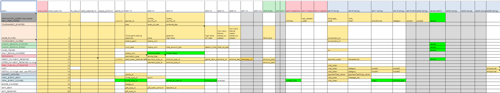

Pages
At GSN Games, we’re obsessed with two things: measuring data and moving fast. We try to take new ideas from conception to production in 2 days. So traditional data warehousing solutions — you know, the ones that take 6 months to implement — would never work for us.
So here’s how we use Vertica and SQL to collect data and still move quickly.
We store all of our data in a single table, named events. The first four columns look perfectly normal:
user_idevent_type_idevent_timegame_idThe next 120 columns look a little odd:
attr1attr2attr3attr120
“Wait, that’s the kind of database that Dilbert’s boss would create! YOU’RE DOING IT WRONG!”
Please hold all of your nerdrage until the end of this article.
“Ok, but I’m extremely skeptical right now.”
As was I when I initially saw this design. You'll come around.
The first 20 columns are for integers, the next 20 for floats, the next 20 for booleans, then next 20 for timestamps, and the last 40 are for strings.
event_type_id is a “discriminator column”: it tells us what kind of data is in each column in that row.
We have lots of different events that we record, and frequently add new ones. We keep track of what data is in what column with a big Google Spreadsheet that looks like this:

So for the PAYMENT_RECEIVED event, attr1 stores the amount of money the user paid us, but for the TOKENS_ADJUSTED event, attr1 stores the number of tokens won or lost in a game.
We use this Google doc to easily generate SQL views for each event type. So to the casual observer, it looks like a normal RDBMS, with one table for each event, but under the hood it's one table to rule them all, forged by Sauron.
“What's S-A-U-R-O-N?”
Tough crowd. Moving on...
This schema allows our game developers and platform engineers to launch new features without involving the BI team. Our app servers write to a flat .csv file. So if a developer comes up with a new feature and wants to begin logging metrics, this is what they do:
The log files rollover every 10MB, at which point they are uploaded to S3 for ingestion by the data warehouse.
Every 15 minutes, the data warehouse downloads all the log files from S3, and uses the Vertica copy copy command to write them to the events table.
Et voilà! An engineer has successfully started logging new data into Vertica, and I didn't have to do anything.
“Wow, you’re lazy.”
Correct! Moving on...
{kind=link}